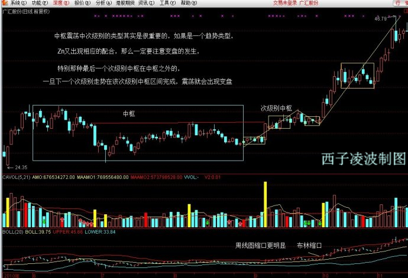
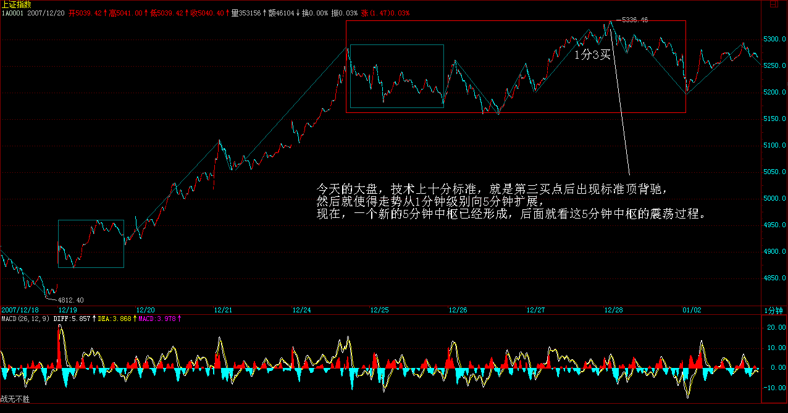
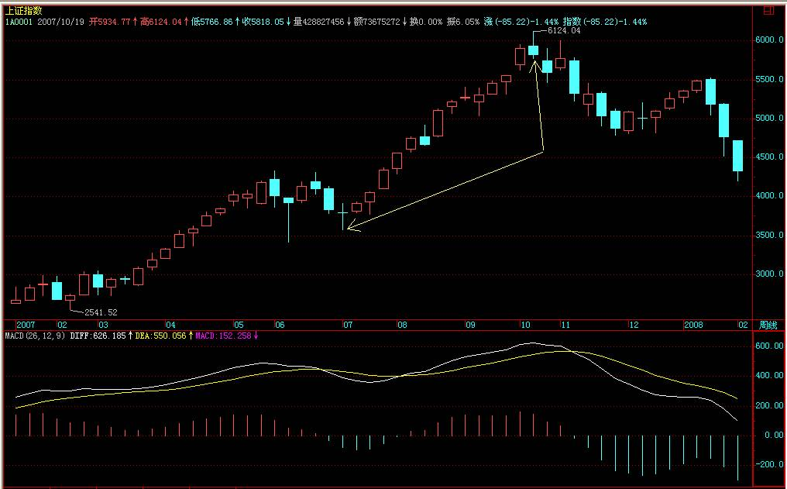
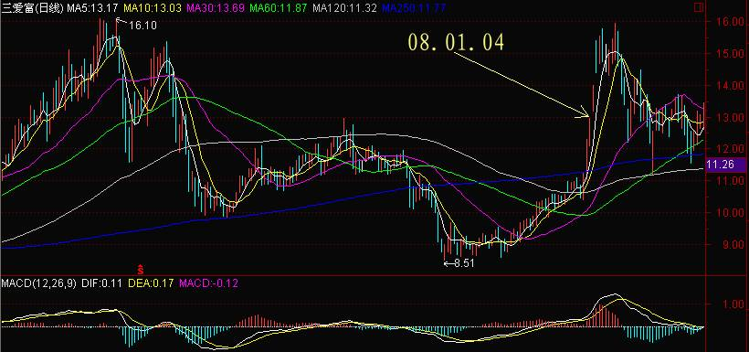
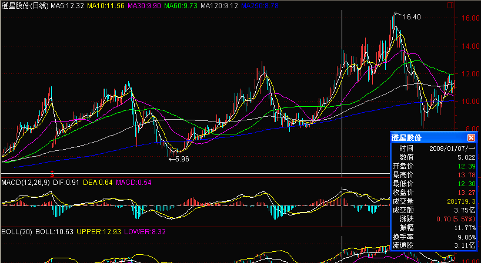
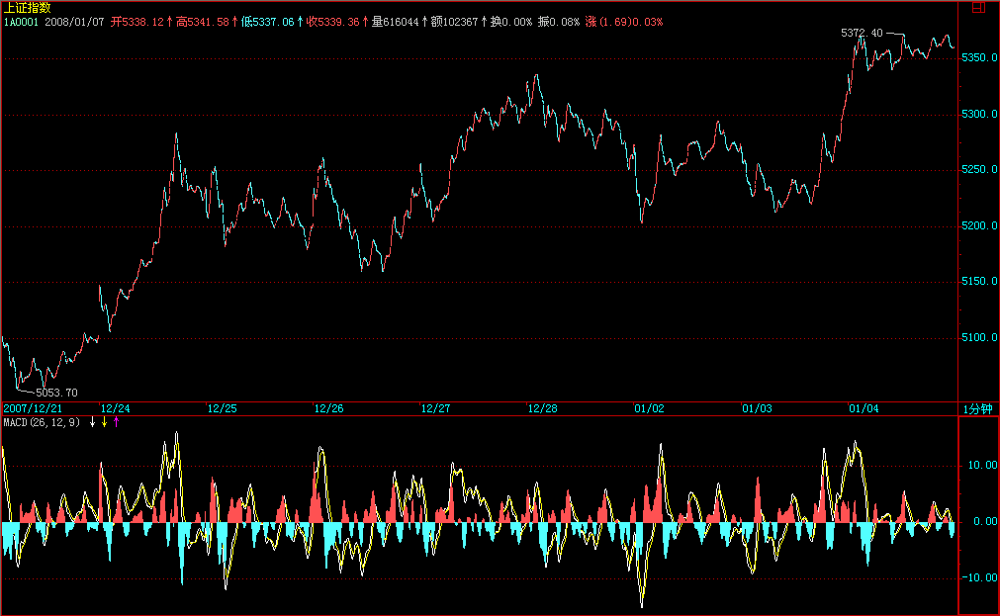
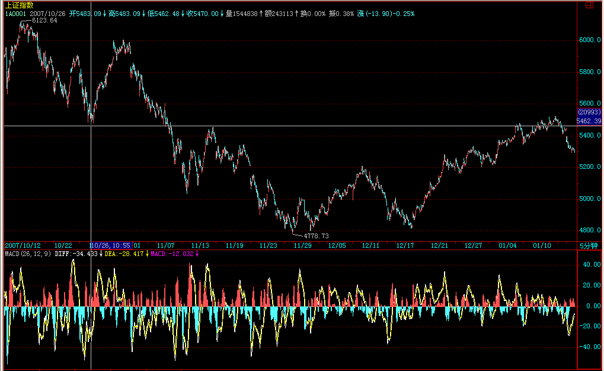
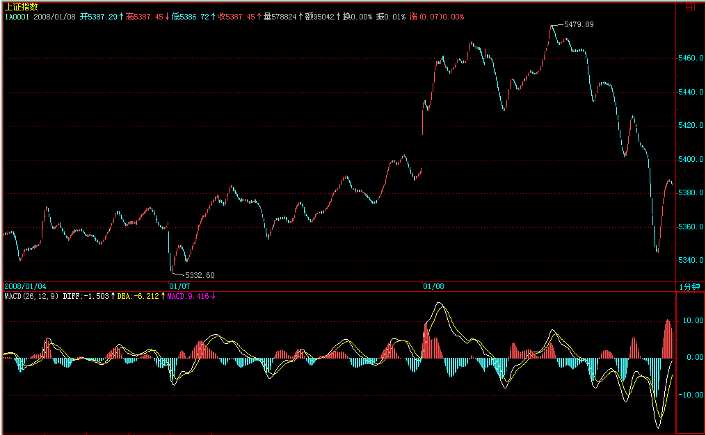
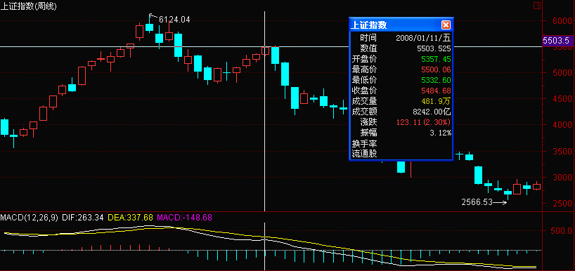
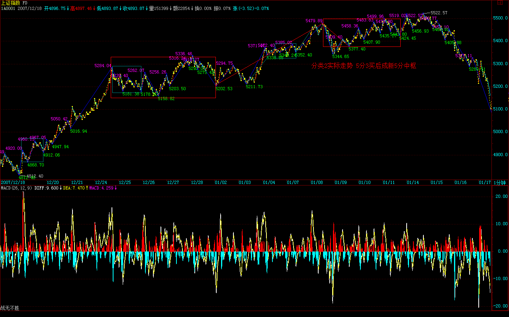

|
 |
教你炒股票92：中枢震荡的监视器
(2007-12-27 20:31:33)
这几天解盘时说到关于中枢震荡的一些细节问题，这里先穿插把相应内容说说。
中枢震荡，最终一定以某级别的第三类买卖点结束。但问题是，如何预先给出有参考价值的提示，也就是如何去监控这震荡是在逐步走强，还是逐步走弱，这是一个有操作价值的问题。当然，顺便地，可以为每次的震荡高低点的把握给出一个大致的区间。
一个中枢确立后，中枢区间的一半位置，称为震荡中轴Z。而每一个次级震荡区间的一半位置，依次用Zn表示，当然，最标准的状态，就是Zn刚好就是Z，但这是很特殊的例子。
显然，Zn在Z之上，证明这个震荡是偏强的，反之偏弱。震荡的中枢区间是[A，B]，那么，A、Z、B这三条直线刚好是等距的，Zn的波动连成曲线，构成一个监视中枢震荡的技术指标。
当然，只要有波动，就可以用类似中枢、走势类型之类的手段去分析，不过Zn的数量不会过于庞大，不会超过9个数据，超过了，次级别就要升级了，所以这样的分析意义不大。
一般来说，这个指标是一个监视。这里，存在着一种必然的关系，就是最终，Zn肯定要超越A或B，为什么？如果不这样，就永远不会出现第三类买卖点了，这显然是不可能的。
但必须注意，反过来，Zn超越A或B并不意味着一定要出现第三类买卖点的，也就是，这种超越可以是多次的，只有最后一次才构成第三类买卖点。不过实际上的情况在绝大多数情况下没有这么复杂，一般一旦有这类似的超越，就是一个很大的提醒，也就是这震荡面临变盘了。
一般来说，如果这超越没有构成第三类买卖点，那么一般都将构成中枢震荡级别的扩展，这没有100%的绝对性，但概率是极为高的。
有了这些知识，对于中枢震荡的可介入性，就有了一个大概的范围。对于买来说，一个Zn在Z之下甚至在A之下的，介入的风险就很大，也就是万一你手脚不够麻利，可能就被堵死在交易通道中而不能顺利完成震荡操作。
同时，那些Zn缓慢提高，但又没力量突破B的，要小心其中蕴藏的突然变盘风险，一般这种走势，都会构成所谓的上升楔型之类的诱多图形。这种情况，反着，同样存在下降楔型的诱空，道理是一样的。
另外，中枢震荡中次级别的类型其实是很重要的，如果是一个趋势类型，Zn又出现相应的配合，那么一定要注意变盘的发生，特别那种最后一个次级别中枢在中枢之外的，一旦下一个次级别走势在该次级别中枢区间完成，震荡就会出现变盘。(娇注：类似5浪上涨，3浪整理在小4区间，构成大1大2浪）
结合上布林通道的时间把握，这样对震荡的变盘的把握将有极为高的预见性了。
 除了特殊的情况，Zn的变动都是相对平滑的，因此，可以大致预计其下一个的区间，这样，当下震荡的低点或高点，就可以大致算出下一个震荡的高低点，这都是小学的数学问题，就不说了。
92课回复
2007年低调收盘预示明年行情性格
(2007-12-28 15:27:45)
其实，这句话是有问题，今天指数虽然低调，但个股并不是都低调，例如本ID说那些股票，大多数就都继续在上攻。这也预示了明年的一个基本特征，指数油水不太大（除非期货很快出来），而个股油水不少。关于明年的分析，一早已经给出，请看“2008年行情展望 2007-12-20
15:59:05”
今天的大盘，技术上十分标准，就是第三买点后出现标准顶背驰，然后就使得走势从1分钟级别向5分钟扩展，现在，一个新的5分钟中枢已经形成，后面就看这5分钟中枢的震荡过程。

估计这次4800点上来的1分钟走势，虽然很标准，但也不一定都能分解对，下面有图，其中286、296是第一、二个中枢的第三类买卖点。297顶背驰后，最少跌回287下，这点已经完成，所以这5分钟中枢的扩展是逃不掉了。
下面的问题，很简单，就是这5分钟的走势类型究竟是一个上涨还是盘整，如果是上涨，这是第一个中枢。明年的第一个问题，就是这5分钟中枢的第三类买卖点问题。
明年，小心“井”，这就是本ID年末最好的忠告。
年末的功课，就是把“2008年行情展望 2007-12-20 15:59:05”提到的箱体给算出来，这是明年走势的一个基本框架指导。
去年年底有6元的000999，今年下半年有8元的600737当各位的学费，但现在没有，因为明年的行情，本ID的原则是把该原有的完成了，新的没有什么好选择，毕竟明年不是前两年，土都耕种了两三年，明年能收割好就是真本事，后面，是该施肥增加肥力的时候了。 说一句有点恶心的话，资本市场里最好的肥料，就是人。这话恶心，却是真相与事实，关键是，不要把自己当成了肥料。
为了让各位不至于成为肥料，明年指数无论到什么地方，这里只有绿色，就是让各位时刻提醒自己，至少可以知道，如果当了肥料，就见不到新苗了。
先下，再见。注意，下面的300并不是已经完成的。
指数疲软下的个股高潮不断
(2008-01-02 15:12:24)
如同这题目，第一天的行情继续预示着本年行情的特点，指数油水不大，个股油水不少，这已经在去年末反复说到了。用句概括性、动感更大的口号，就是：疲软指数，高潮个股。
当然，指数也不会无限制地疲软，指数往往会表现出痉挛式走势，突然抽起来，然后就再抖个不停。抽两下，抖十下，大概就是今年指数上经常会碰到的。哪天指数不痉挛，而是一往无前起来了，那反而要小心。
技术上，指数就是继续去年末那5分钟中枢的震荡，在第三类买卖点出现之前，继续抖个不停。
个股上，没什么可说的，本ID说的那些股票，今天又有好几只创出6124点来的新高，对于个股来说，6124点的高位就是一个强弱分界，突破站稳这位置，行情就会更猛烈。例如，600737就是一个好例子，14元多是6124点下来的高位，突破站稳后，现在已经到20元上了。
当然，对于具体个股，突破那位置后肯定都有反复，对待这种反复，最好的就是顺着做短差，把差价搞出来又不丢失筹码，不过这对操作水平要求高。还有一种就是定好5周线之类的中线位置，只要调整不破就拿着，例如，你看看600737，晃来晃去，把无数人恐吓下去了，你看他突破调整后什么时候有效破过5周均线？
面包会有的，今年是越早越安全，现在，个股机会远大于风险，就算个股年线要收阴，怎么也要先搞一个上影，而越到年中以后，就难说了。今年是先把粮食打足了，如果能有第二次机会最好，没有，也不会饿着了，一年的面包也会有着落了。
千万别追高买任何股票，如果错过了前面的，就在低价与二线中找那些反应迟钝但有资金驻守的。都是人，都要吃饭，只要有资金驻守，总要开张的，否则一年的花费谁给呀？
至于大家伙，技术好的，就等抽筋那几下抽点血，抖的时候就不一定陪着玩了。
先下，再见。
向5600高地攻击前进
(2008-01-03 15:18:39)
站住5209点颈线，下一位置就是5500-5600一线，（原来的大形态颈线）这是十分简单的技术问题了。由于这个5分钟的中枢震荡还没有震荡出第三类买点，所以说这颈线突破100%有效是不严谨的。但生活有时候并不太严谨，否则就太无趣了，所以，没有100%的把握已经确认的事情，我们依然可以喊：向5600高地攻击前进。
做股票，说白了就是忽悠着冲锋陷阱，只是你去忽悠别人，别让别人忽悠你。既然08年属于早收割早有面包的年份，我们当然要在年初就大力忽悠。说实在，“向5600高地攻击前进”这点小目标，说出来都不好意思，也太低了，不过先忽悠低的，现在的人胆子小，毒药要慢慢喂，不像以前，说年内冲10000点，都有人和你急，他愣要说10000太低，还是12500比较好，50个250呀。
如果要冲指数，当然就轮到大家伙抽风的时间，但一定要认清楚现在他们抽两下抖10下的本性，现在是刚一阳复始，不适宜大家伙们太剧烈的运动的。
其他个股，去年下半年基金牛了一把，私募都憋坏了，今年肯定要报仇的。所以，收集好的，肯定是按节奏继续搞，没收集好的，就加快摩擦速度，不过那些现在都没收集好的，都是有点毛病的，算了，反正每次都要有人最后垫背的，没什么可说的。
个股的大节奏昨天说的，分水岭就是6100点相应的位置，对于中低价的，可能530那次是另一个更高的位置，如果在春节前后都不能有效突破这些位置，那这股票今年的前途就有问题了。当然，不排除有些最后当炮灰的庄家就是这么慢，但这里说的是正常的节奏，不说炮灰。
在那些分水位置上，肯定都要洗洗，如何洗，那是手法问题，看明白了，这股票就是给你送钱的，（娇：过压力常见3种方式）来这里，希望是真学会点什么。否则，白送股票给你也没用。例如，600737，8元这么明确告诉是送学费的，但估计也没几个能真把钱给挣到，这难道也是本ID的错？
再说一遍，本ID在这里只是陪练，能学到多少，还只能靠自己了。
先下，再见。
多头，有了冲动就要喊。
(2008-01-04 15:12:12)
今天走势最大的意义是什么？站在本ID理论的角度，就是突破5336使得周线上（1，1）的状态延续，在周线的（1，0）出来之前，也就是周线顶分型出现之前，尽管持股睡大觉。
炒股票，对于中短线来说，有什么比周线都出现向上笔的延续更理想的状况！在这种状况下，你的利润就有了一个超稳定的保障系统给于最强有力的保障并使得该利润尽可能地延伸。那些每天如惊弓之鸟一般的，请好好复习一下历史图形，如果那让你每天惊弓之鸟一样的震荡连周的顶分型都震荡不出来，那又有什么可惊弓之鸟的？
请复习一下历史走势，看看从3563点到6124点的走势，按照本ID理论里最低级的周顶分型就足以让所有的利润得到最大的延伸。
当然，如果技术高的，在周的（1，1）延伸里，也可以利用更低级别的走势搞出不少差价来，或者通过不同级别的震荡换股达到利润最大化。但这是对技术高的说的，如果没那技术，就天天睡觉，顺便可流点口水，每天收盘很无耻地看看周顶分有没有出现，然后继续更无耻地睡大觉，这样就足以让你超无耻地比很多人厉害了。

来本ID这里，关键是学东西。如果太计较自己有没有这股票，是不是赚了，那你的水平永远提不高。还是用本ID的股票为例子，一个最令人深恶痛绝的股票：600636。你是否在里面赚钱并不重要，关键是你能否在这经典走势中学到点什么。看看这经典的走势：一个ABC的下跌，其中的B段在120天线受阻，然后大力挖井后回手在120天突破回试确认，然后迅速回到井的上沿13元附近，一个超完美的井。后面干什么？就是要确认这井的上沿能否站住的问题了，这都是最标准的走势。如果对这类似的走势烂熟于胸，难道你还不能自如地应付类似的走势？

600078、000938等的是另一类型的走势，也是超经典的，请当成作业分析一下。

周末，又是多头发挥嘴皮子功夫的时候。多头，有了冲动就要喊。上升行情，本质上是喊出来的。就是上升多头爽了，然后就喊，见人就喊，喊得满大街的人都很冲动，结果就又上又升了。
周末，多头就多喊喊吧，爽了不喊会憋坏的。
至于超短线的技术分析，由于第三类买点还没有整出来，因此今天的突破并没有100%的保证，这突破是否有效，就看多头周末的嘴皮子功夫与喊功的诱惑力了，把大家都喊爽了、都冲动了，大盘自然就有效突破了。

周末，爽去吧。先下，再见。
勇戴金箍大翻筋斗云
(2008-01-07 15:12:36)
这题目不是紫霞仙子给那只没良心的死猴子写的情书，而是关于现实股市的现实记录。
就算那死猴子，压在五指山下也要吃点铁丸喝点铜汁，而现在公历新年刚过，农历新年还没到，就算玉帝老儿也没资格让各路资金从此就饿着；就算有那资格，思凡下界妖魔鬼怪一番的，谁也挡不住。
因此，今天因为飞天烤鸭念出的2008第一次紧箍咒，也只能象征性地走了次过场。确实，当鸭子，也应该本分点，人家八戒还没上演飞天大乳猪，你急匆匆地扒光了毛来个鸭子大裸飞，还烤鸭版本的，这就有点过了。
过了就过了，修正了再来。这世界上，最折磨人的就是饿啊，一饿人就变态，资金饿了股票就变态，这点，大概连紧箍咒也只能不断升级才能走过场。
因此，今年的紧箍咒版本，肯定是不断升级的，各路资金，就根据自己的承受能力以及市场的总体状况，选择自己筋斗云的时机与方式。
大概现在没有人会反对本ID一直强调的两点：一、疲软指数，高潮个股，指数让他抽两抽抖10抖；二、先下手才会早点有面包，晚了，等紧箍咒变成大铁笼，我们就啃着面包看笼里的八戒变飞天大乳猪吧。
今天的走势，没什么可说的，周线依然（1，1），看看你自己的股票，他的周线是什么？然后继续睡觉。当然，如果你心特别急，那就看日线的，如果日线都是（1，1），那你还急什么？
不过，本周出现一次有点力度的震荡是很正常的，毕竟6124点下来的所谓双顶颈线5462点已经在面前，震荡一下，身心舒畅。
先下，再见。

5462点如期较大震荡
(2008-01-08
15:21:47)
昨天已说“本周出现一次有点力度的震荡是很正常的，毕竟6124点下来的所谓双顶颈线5462点已经在面前”，今天早上的跳空以及下午的线段类顶背驰，理所当然地形成对5462点第一次冲击后的必然震荡。
本ID昨天后面还说了：“震荡一下，身心舒畅。”今天收盘后，被震荡一番的诸位大概每个毛孔洋溢的快感都如江水滔滔不绝于掩耳盗铃儿响叮当我们年轻时五月风光正迷人如蚁月如刀削面子曰俺这旮旯贼好。

其实，这些走势都是超技术化的，而5462点，也是一个超技术化的点位，这点位上下震荡一下，不仅必然而且必要。后面的问题只有两个：震荡的形式以及可能的结果。
开始上课（本课堂可以自由出入，绝对不点名，特别是关门点名，对公然离开课堂者也绝对不拳脚相加，各位可以大肆交头接耳、手舞足蹈、谈情说爱、吃葡萄不吐葡萄皮不吃葡萄反吐葡萄皮。）
无论任何情况，首先都可以很教科书化地给出震荡的形式，按强弱分的一个完全分类，对应着相应的结果：
1、如果在今天跳空附近站住，这样，5200点那5分钟上来的1分钟上涨就形成，该1分钟上涨结束后，就是对应那5分钟的第三类买点，然后，就有绝大的可能形成4800上来的5分钟上涨，最坏，也就是一大的30分钟中枢。
2、如果在5360点那1分钟中枢处站住，这样，对原来5分钟中枢的1分钟向上只是一个盘整类型，后面站住形成一个第三类买点，后面形成一个大的5分钟中枢的机会更大，当然也有突破爆发形成继续中枢上移在更高位置形成5分钟中枢的可能，但一般来说，一个盘整类型的次级别偏移后的第三类买点，总是不那么激动人心。
3、如果跌回5200点上那5分钟中枢才站住，那就没什么可说的，一个大的30分钟中枢就此形成。
所以，纯分类化分析，不管是哪种情况，除了最强那种继续1分钟中枢上移，其余的都将面对一个至少5分钟中枢的形成，最坏还要形成一个30分钟中枢，唯一需要确认的，只是这个中枢震荡的位置高点还是低点，这对操作，本质上没有任何影响。
而实际上，大盘今天马上就把第一种情况给否了，所以，只要把第二、三种情况与实际对应好就可以。
以上，只是顺便把思维的方法演示给各位看，而在实际中，这些分类、判断1秒钟就应该预先反应出来，而有了这完全分类的预先操作方案，你还怕什么？
震荡是好事，特别对手脚麻利、技术高强的，最好就荡个千把回，3000%的利润都出来了。当然，对于技术不好的，震荡就是坐电梯，上上下下享受；对于心态更不好的，那震荡就是噩梦，左右被巴掌。
究竟自己属于哪种，请对号入座。
注意，本ID这里，是高低皆应。有些话是对高点的人说的，例如如何买卖点、背驰、震荡操作、换股、板块轮动之类的；有些是对没时间、短线反应慢的说的，诸如周的顶分型、5周线、持有睡觉之类的；所以，也请对号入座，并不是每一种操作都适合任何人的。
甭说本ID最近少写课程，每天解盘的课程的陪练意义可不要小视了。至于课程，写是要有兴致的，本ID最近兴致在和各位陪读历史，股票就先且陪练吧。
股票，陪什么都可以，就是不能陪套。
先下，再见。
上涨动力，来自清洗。
(2008-01-09 15:12:50)
其实，不仅是股票，这世界游戏的一个基本玩法，就是“上涨动力，来自清洗。”没有清洗，所有人都成功，所有人都吃香喝辣的，那就不是全球化资本的美丽新世界了。
到达顶端的，永远只能是少数人。
当然，股票上涨的动力，更离不开清洗。没有中途下车的，哪里有最后被落井下石的？没有踏空的、被洗的，哪里有最后被套的、接棒的？
藐视技术的，最终只会被技术所藐视。对付震荡、清洗，本ID理论里早给出了最好的办法：分型。请问：如果震荡连（1，1）在日线上都没打破，有什么可说的呢？对于技术高的，震荡后就要回补，如果没这个反应能力，就不做震荡，这个道理说了N的N次方遍了。
震荡，对于有准备的个股与资金，就是给了一个更好的上涨理由，越震越强。抛下一批人，轻装好前进。所以，很多股票，在震荡一下后就开始很无耻地创出新高。
无耻，一定是市场上最荣耀的事情。本ID反复说了，年初越无耻越有面包，1月10日都没过，就想着逃命，那干脆今年什么都别干了，回家学君子剑吧。
技术上的情况昨天早说了，就是第二、三种情况的选择，5分钟还是30分钟中枢的选择。不管是什么，最终都以是否有效站住5462点为标志，站住，就再狂飙突进一次；站不住，就歇歇等能量聚集够了再来。
而个股并不大关心这些，因为资金很饿，管你站不站住什么傻点位，市场这么多资金，就算指数大跌，个股行情也依然不会含糊。所以，本ID早给了各位一个明示：疲软指数，高潮个股。
今天谁能越早把面包赚到手，就是牛人。年初不大胆，难道等着年底倾家荡产？
慢慢地，锅热了，大家伙也会变只蝴蝶满天飞。
在站住5462点前，震荡依然继续，震荡中会有三种人：随便抽血的、看着周顶分睡觉的、被左右巴掌的。你希望成为哪一种？
先下，再见。
把下面的指数剧本告诉你
(2008-01-10 15:19:00)
剧本早写好了，本来瓜田李下，不想八卦。但本ID只是想证明一件事情，就是在资本市场里，就算把剧本告诉你了，绝大多数人最后还是要在井里的，好一点的，就是上上下下去为电梯卖广告，不信？走着瞧。
告诉各位一个总原则，牛市里，深圳成分股是一个先头部队，十几年了，从来没改变过。为什么？说白了太简单，因为深圳一大早就爱看成分股，操控几十只股票总比搞1千几百只股票容易吧。自从96年那次把琼民源之类深圳成分股搞得漫天鸡毛以后，这特色就算留下了。这里还有资金方面的一些历史性与结构性原因，具体就不想八卦了，总之，这是一个总原则。
所以，所有关于上涨的有野心的剧本，第一原则，就是先把深圳成分股给挑出一片蓝天，如果深成指都没有蓝天，其他指数就更要一边晾着了。
挑出一片蓝天，关键是测试风向。
至于上海指数，一般都十分技术化。所有人都知道3600的1/8是多少吧？这次从6124点下来，就是3/8的3600，1350点，精确位置是4774点，结果搞了一个4778点，差了4点，真够差劲的。
6124点下来的2/8的位置是5224点，结果第一拨反弹的位置在5209点，差得有点多，都快15点了，太过分啊。
1/8的位置是5674点，这是下一个位置。但由于整个跌幅的一半在5451，而那M头的颈线位置在5462，所以这个点位是任何剧本里都需要折腾的位置。另外，注意，下跌的2/3位置在5675点，是不是和5674点有点类似？
剧本里对5860到5912这个缺口很不满意，已经准备了不少胶水，不过还有点缺货，什么时候把剩余的胶水准备齐了，关键看在5462到5675点时间段内政策面的风向，风向不对，那就先把买胶水的钱换成买棒棒糖的，一人一个棒棒糖，看你要棒还是糖。
风向不变，那就开始倒卖假冒的胶水，一人分一杯，粘只鸟儿就往天上飞。飞着飞着，突然散了架，剧本的一节到此结束。
至于下一节，有心情的时候，再告诉你。
今天大盘，继续折腾这5462点，看着越来越多人接受本ID早折腾早有面包的理念，本ID相当欣慰。
先下，再见。
因为饿，所以疯狂。
(2008-01-11
15:10:16)
世界上最疯狂的是什么？是饿。这对于资金，也是一样的。 今天的大盘，没什么可说。周末效应了一把，但依然继续对5462点的震荡确认，今天当然只会是试探性质的，完全没必要在指数上干些只争朝夕的事情。
但个股上当然不同了，资金饿啊，春节要买年货啊，年货都在贵ing，除了那些脑子有水的，饿绿了眼的资金，哪里管得了什么周末效应。 站在周线角度，下面两、三周是极为关键的，为什么？因为MACD的绿柱子在收敛，而所有的骗线，最爱的就是这种收敛放红途中的突然转折。

当然，这只是技术的可能陷阱，政策面上，按道理，春节前是不应该有人太干活的。但今天的天气是否如常，没人说得清楚。预测天气这种事情，完全没必要。
唯一必要的，就是大干快上，把自己安放在一个绝对安全的位置。管他刮风下雨，有了足够的利润，什么变化都可以从容面对。
到了5600点上下，政策的因数就会变得极为重要了，新人新思路，市场各方无一不在相互摸索探究中，放个气球，测测风向，大概还不是问题的根本所在。
这些无聊问题，其实都可以安放到周的顶分型、（1，1）里，对于懒人来说，没时间探究这些分力之间的游戏，一切都在走势之中。
看看，周（1、1）依然，日（1，1）依然，你就继续睡觉。
周末，放风了。 先下，再见。
指数犹疑，个股补涨
(2008-01-14 15:10:28)
到了目前这个位置和时间段，大盘进入敏感阶段。首先，对于多头来说，好不容易到了5600点上下这最重要的阻力跟前，绝对不想一个哆嗦就给震回去。但这个关口确实比较压力大，主要不是技术上的，而是心理与政策面上的。
从政策面的角度，很快就进入春运阶段，因此，对于政策的活动空间，这几天是最敏感的。如果要有什么花样，这几天的可能性最大。到了月底，快春节了，大家都有忙的事，而且没人想给中国足球队当挡箭牌，那群家伙除夕准备给大家添堵，难道还有谁想分担一下被骂的风险？这种人大概是没有的。
所以，指数在这个时间段犹疑一下，并不是太严重的事情，目前技术上，继续是原来说的第二种情况，在5462点附近震荡出一个5分钟中枢，大不了向一个30分钟的延伸去，所以指数依然继续抽两下，哆嗦十下的节奏。

个股上，一些前提幅度较小的板块开始补涨，由于大家伙这时候不适宜集体暴动，因此这些补涨后板块的动向就很关键了。现在市场越来越大，参与的资金成分越来越复杂，只要指数形态不破坏，板块机会还是很多的。
到5600点上下后，震荡的幅度会有所加大，现在最好的策略，就是往上拱，拱一下，震几下，这样心态、技术等压力就会慢慢破解，千万不能急，急了，根基就不稳。技术不行的，中线上，继续看周的（1，1）保持情况与5周均线，短线看日线的相应指标；技术好的，可以利用5分钟震荡的节奏进行板块操作。
先下，再见。
大盘压力期下的多头策略
(2008-01-15 15:09:40)
已经反复说过，目前大盘进入压力期，首先是政策的敏感期，其次，技术上也有相应的重压力区在面前，更重要的是，除了大家伙，板块在基本轮动一次后，很多股票都进入相对的调整期，这时候对多头来说，确实有点压力。
一般来说，碰到这种情况，有两种处理的方法：一、跳一次大水，把压力变动力，把不坚定的赶跑，用空间换时间，加快调整的结束；二、在这里上下震荡继续磨，让成交量慢慢萎缩下来，以时间换空间，最后取得新的上升能量。
不管哪种情况，用本ID理论的角度看，都是扩展出30分钟的中枢，然后再寻求突破。5462点这个位置，反复强调，一直不能有效站住，需要多头努力的事情还很多。
说白了，现在最好有一个不大不小的利空，这是对多头最好的礼物，否则，现在消息面太平静，反而对心理上不是一个好的暗示。大盘究竟采取哪种调整方式，其实从30分钟的震荡走势中不难发现，一般来说，成交量能萎缩下来，就第二种方式；否则，并不排除有一到两天让大家再次想起亮晶晶的机会。
个股的节奏以前已经说过了，一般突破6124点或530高位的股票，都会相应有所调整，如果能站住，就会有第二波，现在很多股票都处在这种状态，等待大盘最终调整的结束。
只要有一点机会，多头都会往上面去挑逗那5600点的重压力，但折腾少不了，必须耐心才有好果子。 |
|
|
|